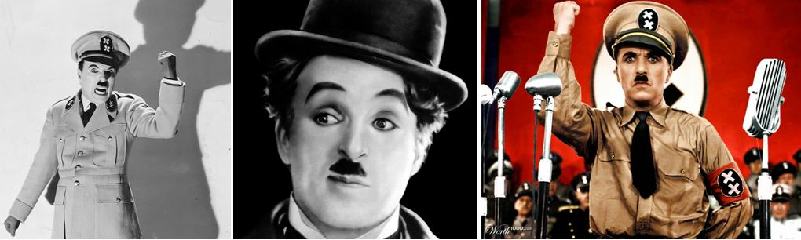

Пурим. Священное смехотворство
«Само по себе смехотворство, юмор – это очень серьезное оружие». Сергей Комягин.
«Пурим-шпил» (с идиш: ПУРИМское представление) — юмористические и сатирические пьесы, которые традиционно разыгрываются в еврейских общинах в праздник «Пурим». Первоначально такие представления были просты и коротки (текст не превышал несколько сот рифмованных строк), однако уже в начале 18 в. в ПУРИМшпилях начало сказываться влияние европейского театра, и эти представления постепенно превратились в драматические постановки с многочисленными ролями и музыкальным сопровождением.
Начало разговора см. "Пурим-шпиль. ОБЛИЧИТЬ ЗЛО..."

Пурим. Священное смехотворство
Мои собеседники актеры ярославского Драматического Театра Екклизиаст Сергей Комягин и Сергей Лукьянов.
Эфраим Калиш: считаете ли вы, что смехотворство и высмеивание – приемлемо для веруюущего человека? Известно, что церковь на протяжении всей своей истории негативно смотрела на подобного рода явления и осуждала смехотворство.
Сергей Комягин: Само по себе смехотворство, юмор – это очень серьезное оружие. Знаменитый Чарли Чаплин, создав свой шедевр «Великий диктатор» и высмеял там Гитлера, он стал личным врагом Гитлера. Никого Гитлер так не ненавидел, как ненавидел Чарли Чаплина. Почему? Потому, что Гитлер там был высмеян. Можно все что угодно... Можно плохо относиться к Гитлеру, ругать его.

Сергей Лукьянов: Не поможет!
Сергей Комягин: Верно. Но, как только это высмеяно, подобно как в Писании сказано: «Живущий на небесах посмеется, Господь поругается им» (Пс.2:4). Он, Господь дал нам смех.
Поэтому на самом деле смехотворством можно высмеять святые дела и таким образом мы станем уничтожать это, потому что это очень серьезное оружие. Это как атомная бомба. Можно критиковать святыню и это не будет настольбко разрушительно, как если ее высмеять.
Поэтому вопрос заключается в том, что мы будем делать этим самым оружием, в чьих руках это оружие? Если действительно это в руках Бога, в руках свтого человека, то он может таким образом показать царство тьмы, он может так высмеять, может до такой степени опозорить это царство тьмы, что уже не будет нужды его критиковать. Человек посмотрит и переживет невероятное чувство свободы.
Когда мы гастролировали со спектаклем «Духовная война», мы были в разных общинах, в том числе – религиозных, после спектаклей они делились с нами своими переживаниями: во-первых они не знали, что так можно. Ранее, они однозначно думали, что это грех, грех лицедейства.
смотреть спектакль «ДУХОВНАЯ ВОЙНА»
Но во время спектакля они переживали такую свободу! Они потом благодарили, как все наше старое представление перевернулось в одночасье. Как здорово, что вы высмеяли все эти вещи. Мы у видели в этом себя. Они просто переживали свободу. Потому что царство тьмы было разрушено снарядами божьего юмора.
Сама по себе эта способность (остроумие) – нейтральна. Члеовек одаренный остроумием, если он нечестивый, - может высмеять святые вещи и это будет в высшей степени разрушительно.
Сергей Лукьянов: Интересно, то что я видел в своей практике – когда очень смешные собрания общины, когда все смеются – происходит больше всего освобождений от демонов. Потому что нет такого демона радости, но есть демон депрессии, уныния. Бесы просто выходили из людей во время смеха. Потому что смех – это это реакция на истину. Как только человек понимал истину, он начинал смеяться. Один человек вскочил посреди зала и заорал: «Слава Тебе, Господи!». Одна женщина засмеялась, упала в проходе. Потом оказалось, что лице ее полностью исцелилось от наростов, которыми она страдала. Но пока она смеялась, она полностью исцелилась. Она вернулась к себе домой, водой смыла болезнь, бывщую у нее на коже. Т.е. во время настоящего смеха, когда истина открывается, происходит освобождение.
Бог – Творец юмора. Он Сам бесконечно радостен. Поэтому для нас театр, любые миниатюры, которые прославляют Бога, прославляют истину, высвечивают и высмеивают зло – это замечательно.
Эфраим Калиш: Значит ли это, что лучшее средство обличить зло – это юмор, или даже сатира?
Сргей Комягин: Все зависит от жанра. Можно Гитлера изобразить так, как это сделал Чаплин, но можно сделать это и по-другому – злым и ужасным. Но и в том и др. случае он будет злодей. Это зависит от жанра. Жанры помогают посмотреть на один предмет с разных сторон. Так что мы получим о предмете больше информации и понимания. Поэтому хорошо, что есть разные жанры. То, что нельзя слдеалть средствами комедии и трагедии, можно сделать средствами трагикомедии, отрывая таким образом новые грани и новое более глубокое понимание. Поэтому здорово, что есть такое разноообразие. Жанры – всего лишь средство, служащее реализации сверх задачи.
Эраим Калиш: Сергей, нет ли у тебя планов осуществить постановку по книге Эстер (синод. - Есфирь)?
Сергей Комягин: Это правда – всегда мне хотелось поставить спектакль по этой книге. Потому что она очень драматургична, в ней яркие герои и там есть много что играть. Поэтому конечно, хотелось ыб поставить такой спектакль.
Сергей Лукьянов: Она еще и пророческая и филосовская.
Сергей Комягин: В этой книге есть все! Она замечательна. Она всегда привлекала меня.
Эфраим Калиш: Так, что, можно ожидать этой вашей новой постановки?
Сергей Комягин: Конечно. Тут вопрос в том, что высветить в этой книге. Потому что в ней так много всего. Но нельзя все уместить в одном спектакле. Это бездонно, это классика!
Эфраим Калиш: Друзья, спасибо вам за беседу. Очень интересно было услышать вашу точку зрения и свидетельсво. Здесь действительно есть над чем размыслить. Думаю, ваш рассказ поможет по-новому, под иным углом взглянуть на нашу еврейскую традицию Пуримшпилей.
СМОТРЕТЬ ВИДЕО РАЗГОВОР С СЕРГЕЕМ КОМЯГИНЫМ И СЕРГЕЕМ ЛУКЬЯНОВЫМ